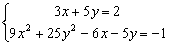

綜合程式一
這個程式將以下六個程式合併為一，主要供fx-3900PV改機後大大增加程式空間後使用。較特別的是使用時沒有程式編號區分，免除記憶程式編號的麻煩。
˙小數轉換分數 (亦可以直接輸入數值計算循環小數問題)
˙一元二次方程 (包括複數根，亦可以計算二次函數頂點坐標)
˙聯立二元一次方程
˙聯立二元一次及二次方程
˙兩直線間夾角
˙直線與點的距離
程式編寫日期: 2007年1月30日
程式(284步)
| 1 | Kin 5 | 2. | X←→Y | 3. | Kin × 3 | 4. | Kin × 4 | 5. | Kin × 6 |
| 6. | cos-1 | 7. | sin | 8. | Kin × 5 | 9. | Kin + 6 | 10. | Kout 5 |
| 11. | Kin + 3 | 12. | Kin + 4 | 13. | Kout 3 | 14. | FIX 0 | 15. | RND |
| 16. | NORM | 17. | Kin 5 | 18. | Kin - 3 | 19. | 9 | 20. | 9 |
| 21. | +/- | 22. | 10x | 23. | Kin + 3 | 24. | Kout 3 | 25. | 1/x |
| 26. | Kin 3 | 27. | 0 | 28. | = | 29. | Kin × 5 | 30. | X←→K6 |
| 31. | Kin + 5 | 32. | Kout 5 | 33. | + | 34. | ( | 35. | 1 |
| 36. | X←→Y | 37. | Kout 5 | 38. | x2 | 39. | √ | 40. | X←→K4 |
| 41. | Kin × 4 | 42. | X←→K4 | 43. | SCI 9 | 44. | RND | 45. | Kin 5 |
| 46. | FIX 0 | 47. | RND | 48. | Kin - 5 | 49. | X←→K5 | 50. | x2 |
| 51. | x > 0 | 52. | NORM | 53. | 0 | 54. | = | 55. | x2 |
| 56. | √ | 57. | X←→K5 | 58. | ENT | 59. | Kin 3 | 60 | Kin 4 |
| 61. | Kin 6 | 62. | Kout 5 | 63. | ENT | 64. | Kin × 4 | 65. | Kin - 6 |
| 66. | Kin 5 | 67. | Kin 1 | 68. | Kin 2 | 69. | 1 | 70. | Kin + 4 |
| 71. | Kout 4 | 72. | R→P | 73. | Kout 6 | 74. | = | 75. | X←→Y |
| 76. | x2 | 77 | √ | 78. | ENT | 79. | Kin 6 | 80. | +/- |
| 81. | × | 82. | Kout 3 | 83. | × | 84. | 4 | 85. | + |
| 86. | Kout 1 | 87. | x2 | 88. | + | 89. | Kin 4 | 90. | 4 |
| 91. | 9 | 92. | +/- | 93. | 10x | 94. | = | 95. | ÷ |
| 96. | x2 | 97. | √ | 98. | + | 99. | 1 | 100. | = |
| 101. | ÷ | 102. | 2 | 103. | × | 104. | Kin × 2 | 105. | Kout 4 |
| 106. | x2 | 107. | √ | 108. | √ | 109. | Kin - 2 | 110. | X←→Y |
| 111. | Min | 112. | = | 113. | Kin + 1 | 114. | Kout 3 | 115. | +/- |
| 116. | × | 117. | 2 | 118. | Kin ÷ 4 | 119. | + | 120. | 5 |
| 121. | 0 | 122. | +/- | 123. | 10x | 124. | = | 125. | Kin ÷ 1 |
| 126. | Kin ÷ 2 | 127. | Kin ÷ 4 | 128. | 1/x | 129. | × | 130. | Kout 5 |
| 131. | = | 132. | X←→K3 | 133. | × | 134. | ( | 135. | Kout 1 |
| 136. | ENT | 137. | Kin 1 | 138. | Kout 2 | 139. | ENT | 140. | Kin 2 |
| 141. | 1 | 142. | = | 143. | Kin 4 | 144. | × | 145. | Kout 1 |
| 146. | + | 147. | Kout 5 | 148. | × | 149. | Kout 2 | 150. | + |
| 151. | Kout 6 | 152. | = | 153. | ÷ | 154. | Kout 4 | 155. | R→P |
| 156. | Kout 5 | 157. | = | 158. | x2 | 159. | √ | 160. | ENT |
| 161. | Kin 3 | 162. | Kout 4 | 163. | × | 164. | Kout 2 | 165. | - |
| 166. | Kout 1 | 167. | × | 168. | Kout 5 | 169. | = | 170. | Min |
| 171. | Kout 6 | 172. | × | 173. | Kout 2 | 174. | - | 175. | Kout 3 |
| 176. | × | 177. | Kout 5 | 178. | = | 179. | ÷ | 180. | ( |
| 181. | MR | 182. | + | 183. | 7 | 184. | 0 | 185. | +/- |
| 186. | 10x | 187. | = | 188. | ENT | 189. | × | 190. | ( |
| 191. | ( | 192. | ( | 193. | ( | 194. | Kout 3 | 195. | × |
| 196. | Kout 4 | 197. | - | 198. | Kout 1 | 199. | × | 200. | Kout 6 |
| 201. | ) | 202. | ÷ | 203. | ( | 204. | MR | 205. | + |
| 206. | 7 | 207. | 0 | 208. | +/- | 209. | 10x | 210. | ) |
| 211. | ) | 212. | ENT | 213. | × | 214. | ( | 215. | Kout 5 |
| 216. | Kin ÷ 4 | 217. | Kin ÷ 6 | 218. | Kout 1 | 219. | - | 220. | Kout 2 |
| 221. | × | 222. | Kout 4 | 223. | - | 224. | Kout 3 | 225. | × |
| 226. | Kout 4 | 227. | × | 228. | Kin - 2 | 229. | Kin - 2 | 230. | Kout 4 |
| 231. | +/- | 232. | Kin 5 | 233. | ) | 234. | Min | 235. | Kout 6 |
| 236. | Kin × 2 | 237. | Kin × 3 | 238. | 1 | 239. | ) | 240. | × |
| 241. | Kin + 3 | 242. | Kout 4 | 243. | ) | 244. | Kin - 2 | 245. | Kout 6 |
| 246. | Kin × 3 | 247. | 1 | 248. | = | 249. | Kin + 2 | 250. | ENT |
| 251. | Kin - 3 | 252. | MR | 253. | M+ | 254. | Kout 2 | 255. | Kin 1 |
| 256. | x2 | 257. | - | 258. | 2 | 259. | × | 260. | MR |
| 261. | × | 262. | Kout 3 | 263. | = | 264. | √ | 265. | Kin + 1 |
| 266. | Kin - 2 | 267. | MR | 268. | +/- | 269. | Kin ÷ 1 | 270. | Kin ÷ 2 |
| 271. | Kout 1 | 272. | Kin × 5 | 273. | HLT | 274. | Kout 6 | 275. | Kin + 5 |
| 276. | Kout 5 | 277. | HLT | 278. | X←→K2 | 279. | Min | 280. | Kin × 4 |
| 281. | HLT | 282. | Kout 4 | 283. | Kin - 6 | 284. | Kout 6 | 285. |
例題1: 將0.75化為分數。
按 0.75 P1 (顯示分子為3) RUN (顯示分母為4)
計算完結後按 AC 終止程式
例題2: 將循環小數 9.1919.......轉化為分數。
按 9.1 9191 9191 (輸入十位數值)
再按 P1 (顯示分子為910) RUN (顯示分母為99，即910/99)
計算完結後按 AC 終止程式
例題3: 將循環小數 0.123123........化為分數
注意: 若果要確保循環小數能正確轉化為分數，要輸入十位有效數字，所以若果數值絶對值小於1，請以10指數形式輸入十位數值。
按 1.23 123 123 1 EXP +/- 1 (小於1數值以10的指數形式輸入10位數值)
再按 P1 (顯示分子為41) RUN (顯示分母為333，即41/333)
計算完結後按 AC 終止程式
註1: 計算循小數轉化分數時，要輸入十位有效數字。
註2: 由於計數機本身準確度的限制，當分子或分母是5位整數或大於5位整數時，分數的答案有可能會是一個近似值的答案(亦即是有可能並非真確值，特別是無理數所產生的小數)。
註3: 小數化分數程式保留記憶K1、K2及M沒有使用，因此若其它程式答案記在這些記憶，可以直接配合這個程式一起使用。
註4: 本網站的 fx-3900PV程式(除數值法程式外)，大多數有記存答案的程式，會盡可能將第一個答案(及第二個答案(如有))儲存在K1及K2中，若果答案不是記存在記憶K1、K2及M，請自行先記憶在這三個記憶中，以便其後提取數值轉化為分數。
例題4: 解 21x2–10x + 1 = 0
按 P1 21 RUN 10 +/- RUN 1 RUN (有M細字(實根)及第一個根實為0.142857142)
RUN (有M細字(實根)及第二個實根為0.333 333 333)
計算二根後按 AC 終止程式，這時 兩根的數值，頂點的坐標分別儲存在K1、K2、K3及K4。
若果想將兩根答案轉化為分數:
再按 Kout 1 P1 (顯示第一個根分子為1) RUN (顯示第 一個根分母為7)
再按 Kout 2 P1 (顯示第二個根分子為1) RUN (顯示第 二個根分母為7)
所以方程的解為 x = 1/7 或 x = 1/3
計算完結後按 AC 終止程式
注意: 使用小數化分數後，頂點的坐標記憶將不存在。
例題5: 解 36x2 - 36x + 25 = 0
按 P1 36 RUN 36 +/- RUN 25 RUN (沒有M字(複數根)，顯示實數部為0.5)
RUN (沒有M字(複數根)，顯示虛數部為0.666666666)
所以方程的解為 x = 0.5 ± 0.666666666 i
顯示答案後按 AC 終止程式，這時 根的實數部、虛數部及頂點的坐標分別儲存在K1、K2、K3及K4。
若果想將兩根答案轉化為分數:
再按 Kout 1 P2 (顯示實數部分子為1) RUN (顯示 實數部分母為2)
再按 Kout 2 P2 (顯示虛數部分子為2) RUN (顯示虛數部分母為3)
所以方程的解為 x = 1/2 ± 2i/3
計算完結後按 AC 終止程式
注意: 使用小數化分數後，頂點的坐標記憶將不存在。
例題6: 解聯立方程 :

按 P1 再按 1 RUN 1 RUN 7 RUN 1 RUN 1 +/- RUN 1 RUN (顯示4) RUN (顯示3)
因此解答為 x = 4 及 y = 3.
程式執行完結後，按 AC 終止程式，這時方程式組的行列式儲存在M記憶中。
註1: 在顯示x及y的解答時，有M的細字表示方程有唯一的解，若果沒有M的細字，即方程組的行列式為0，表示方程組無解(兩直線互相平行)或有無限解(兩直線相同)，若為無解，答案將會顯示一個不合理的巨大數值(例如: 1070等等)。
註2: 程式無記存兩根的功能，若果想將小數答案化為分數，要自行抄下x的數值，以便在較後時間使用小數化分數程式，但在顯示y的數值時，如想化為分數，可以直接執行小數化分數程式。
例題7: 解聯立方程:

按 P1 再按 3 RUN 5 RUN 2 RUN 9 RUN 0 RUN 25 RUN 6 +/- RUN 5 +/- RUN 1 +/-
RUN (顯示0.333333333) RUN (顯示0.2，即第一組的解答為 x=0.333333333, y=0.2)
RUN (顯示0.5) RUN (顯示0.1，即第一組的解答為 x=0.5, y=0.1)
註: 第一組及第二組解答分別記存在記憶 K1、K2、M及K6中
若果想將兩根答案轉化為分數，請直接先將最後答案轉化。
所以再按 P1 (顯示1) RUN (顯示10，即0.1=1/10)
再按 MR P1 (顯示1) RUN (顯示2，即0.5=1/2，所以第二組解答為x=1/2, y=1/10)
再按 Kout 1 P1 (顯示1) RUN (顯示3，即是0.333333333=1/3)
再按 Kout 2 P1 (顯示1) RUN (顯示5，即是0.2=1/5，所以第一組解答為x=1/3, y=1/5)
註: 使用小數化分數程式，第二個組解答的y值記憶(K6)將不能保留。
例題7: 兩直線斜率分別為 - 2及0.5，求兩直線之間的夾角。
按 P1 2 +/- RUN 0.5 RUN (顯示夾角為90
°)計算完結後按 AC 終止程式
例題8: 求直線 3X + 4Y + 7 = 0與點(0,0)的最短距離。
按 P1 3 RUN 4 RUN 7 RUN 0 RUN 0 RUN (顯示距離為1.4)
若果想將兩根答案轉化為分數，請直接按 P1 (顯示分子為7)
RUN (顯示分母為5)，否則計算完後按 AC 終止程式